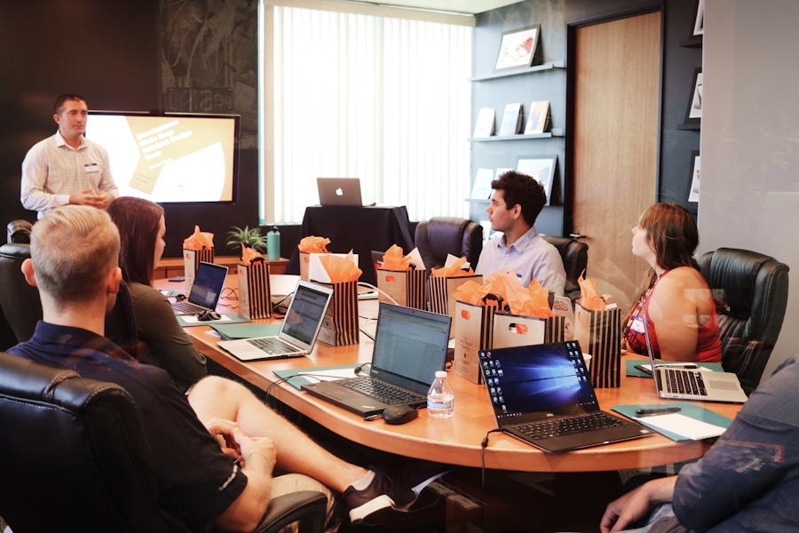

Go to top
Menu
Home
Services
Business Growth
Market Research & Opportunity Analysis
Business Growth Strategy
Digital Transformation
Analytics & Reporting
Customer Acquisition
Google Ads
Meta Advertising
LinkedIn Advertising
Landing Page Optimization
Tracking & Attribution
Reporting
Brand Strategy
Visual Identity
Brand Strategy
Marketing Assets
Social Branding
Reputation Management
Digital Experiences
Website Design
WordPress Development
Website Optimization
Conversion Optimization
Website Maintenance
Content Systems
Content Strategy
Content Creation
Social Content
Email Marketing
Marketing Automation
Content Distribution
Search Visibility
SEO Strategy
Technical SEO
On-Page SEO
Local SEO
Content SEO
Off-Page SEO
SEO Reporting
Work
Contact Us
E-commerce Organic Growth
SEO
E-commerce
Organic Traffic
Growth
